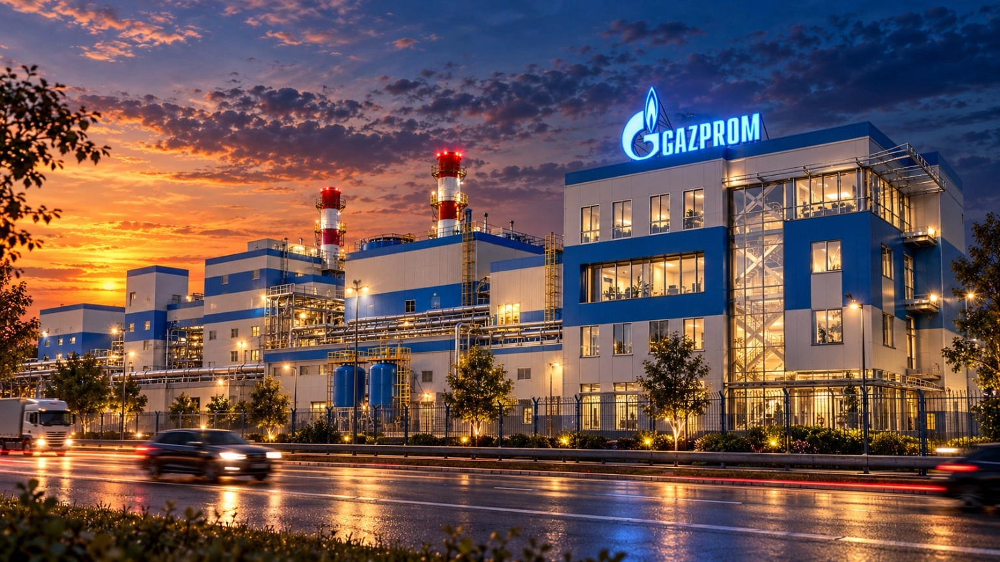

Energija koja
pokreće industriju.
TE-TO Pančevo proizvodi električnu energiju i procesnu paru primenom kombinovanog gasno-parnog ciklusa. Postrojenje je namenjeno potrebama industrije i tržišta električne energije Srbije.

Direktno do informacije
TE-TO Pančevo ↗Nabavke ↗Odgovornost i HSE ↗Sistem menadžmenta ↗Energetski monitor → GEH SERBIA / ENERGY GENERATION
GEH SERBIA / ENERGY GENERATIONProizvodnja sa konkretnom industrijskom ulogom.
TE-TO Pančevo koristi prirodni gas u kombinovanom ciklusu za proizvodnju električne energije i procesne pare. Procesna para namenjena je Rafineriji nafte Pančevo, dok se električna energija plasira na tržište Srbije.
O kompanijiEnergetika u službi industrije
Od gasne turbine do procesne pare: različite faze jednog energetskog sistema.


Četiri povezana koraka gasno-parnog ciklusa.

Prirodni gas
Prirodni gas je osnovno gorivo za postrojenje.
Odgovornost je deo operativnog procesa.
Bezbednost ljudi, zaštita životne sredine i dokumentovani sistemi menadžmenta čine sastavni deo upravljanja industrijskim postrojenjem.
Jasan put za dobavljače i izvođače.
Elektronske nabavke, kvalifikacija izvođača i pristup potrebnim obrascima organizovani su kao zasebna celina za poslovne partnere.
Direktan pristup sekcijama
Dodatne informacije